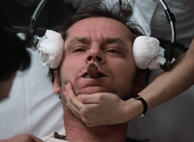

The majority of conspiracy theories eventually link to a secret society that are controlling the world.
This can be seen in ridiculous theories such as the "evil aliens" theory, but also more in believable and logical
theories such as the cancer cure theory, which states that the government are controlling the population, by
not allowing the cure to be available to the public, but instead, giving them ''medication'' so that they will profit
from their misfortune. This is also true for the ''Illuminati Plot'' theory.
The idea revolves around a group of world leaders with the desire to rule the world by any means neccessary.
In this case, the use of a chemical additive into the water supply of the entire population.
This notion is mentioned, with comical effect, in Stanley Kubrick's Dr. Strangelove, where one insane general repeatedly
accuses the Warsaw Pact nations of attempting "to sap and impurify all of our precious bodily fluids.
Military Atomic Weapons
Here we see another example of a conspiracy which revolves completely around power.
The bases of the theory is that fluoridation
was designed by the military industrial complex to protect the U.S. atomic weapons program from litigation. In other words, it is thought
that the military has created this chemical to keep the majority of the populous in a submissive state.
The military are involved in quite a lot of different conspiracies, the most publicised was the 9/11 airstrike. One of the most recent
allegations involve an American journalist that was assassinated days after he informed local news reporters that he had evidence of
misconduct in the FBI. Even though his death involved a car explosion in public, Los Angeles during day-light hours, this evidence based report is still
going unnoticed, which shows the media's control of the public's perception. Test it yourself, ask someone whether they are aware of Michael Hasting's assassination
and then ask them whether they saw Miley Cyrus's performance in the V.M.A.'s.
Submission German Strategy
This is somewhat similar to the previous plot; it also involves the suppression of the general populous with the use of the chemical
drug, water fluoridation, but through the German government rather than the American military system.
It is thought that German companies are producing the fluoridation on behalf of the government to keep the public at bay, and to further their power.

Russian's Creating Schizophrenia
What do you think this theory involves? Is that your final answer? Unfortunately I cannot give you a million euro, but you are correct, this theory also involves
a group of power hungry sinister people.
In this ''plot'' they are in the form of the Russian military, who supposedly drugged the prisoners in their jails with high levels of
fluoridation to not only keep them at bay but completely incapacitate them, which sters up thoughts of Jack Nicholson at the end of ''One who flew over the Cuckoo's
Nest''.
And to put the cheery on the cake, this conspiracy also informs us that fluoridation contributes to
schizophrenia. Charming, isn't it?
Disposing Chemical Waste
A theory that isn't involving power, but is revolving around greed and corruption, here we are told that the aluminium and phosphate industries are backing the addition
of fluoride into the public supply of water as a means of disposing industrial waste.
Keep the population down and keep the waste down? Sounds like a plan!